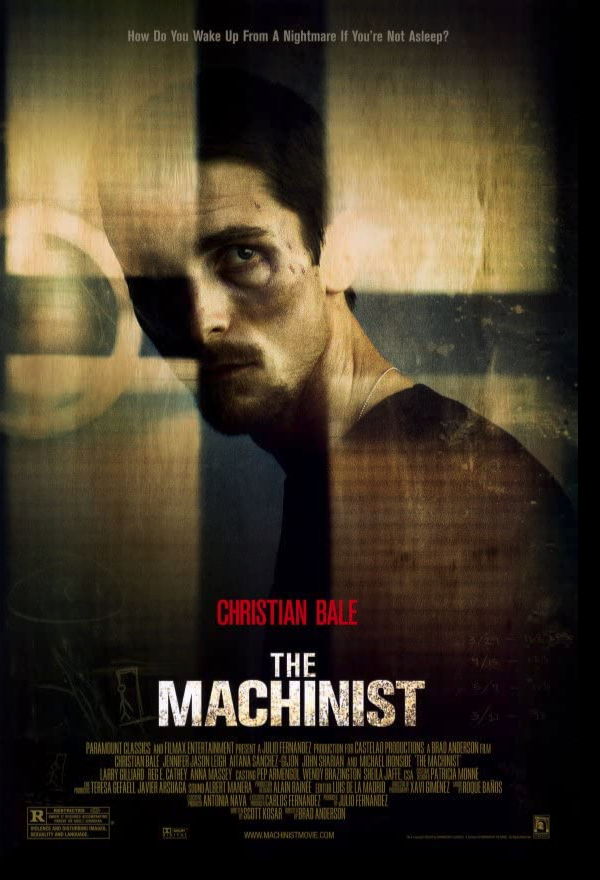

The drug-induced utopias of four Coney Island people are shattered when
their addictions run deep.
Baraka
1992 ‧ Documentary ‧ 1h 36m
A collection of expertly photographed scenes of human life and religion.
Dear Zachary: A Letter to a Son About His Father
2008 ‧ Documentary/Biography/Crime ‧ 1h 35m
A filmmaker decides to memorialize a murdered friend when his friend's ex-girlfriend
announces she is expecting his son.

The Machinist
2004 ‧ Drama/Thriller ‧ 1h 41m
An industrial worker who hasn't slept in a year begins to doubt his own sanity.
No Country for Old Men
2007 ‧ Crime/Drama/Thriller ‧ 2h 2m
Violence and mayhem ensue after a hunter stumbles upon a drug deal gone
wrong and more than two million dollars in cash near the Rio Grande.
Get Out
2017 ‧ Horror/Mystery/Thriller ‧ 1h 44m
A young African-American visits his white girlfriend's parents for the weekend,
where his simmering uneasiness about their reception of him eventually reaches
a boiling point.
Triangle
2009 ‧ Fantasy/Mystery/Sci-Fi ‧ 1h 39m
Yacht passengers encounter mysterious weather conditions that force them to jump onto another ship,
only to have the odd havoc increase.
Another Round
Original Title: Druk
2020 ‧ Comedy/Drama ‧ 1h 57m
Four high school teachers consume alcohol on a daily basis to see how it
affects their social and professional lives.
Mr. Nobody
2009 ‧ Drama/Fantasy/Romance ‧ 2h 21m
A boy stands on a station platform as a train is about to leave. Should he go with his mother or stay with his father? Infinite possibilities arise from this decision.
As long as he doesn't choose, anything is possible.